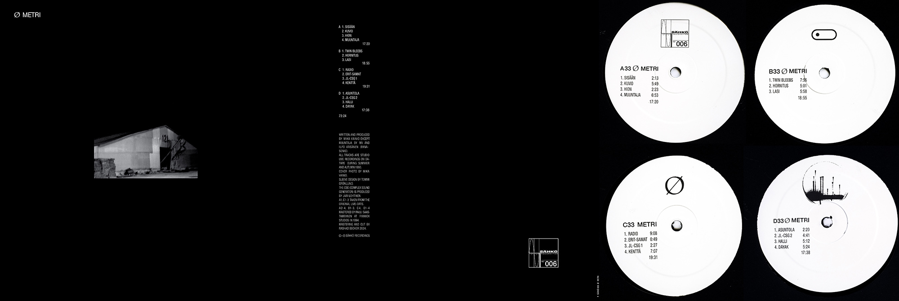

SÄHKÖ-006
Ø
Metri 2LP -2025 reissue
2LP/DL
Released in February 1994, 2025
Produced by Mika Vainio
2025 vinyl track order:
A1 | Ø - Metri - Sisään 2:13
A2 | Ø - Metri - Kuvio 5:49
A3 | Ø - Metri - Hion 2:23
A4 | Ø - Metri - Muuntaja 6:53
17:20
B1 | Ø - Metri - Twin Bleebs 7:56
B2 | Ø - Metri - Hornitus 5:01
B3 | Ø - Metri - Lasi 5:58
18:55
C1 | Ø - Metri - Radio 9:08
C2 | Ø - Metri - Erit-samat 0:57
C3 | Ø - Metri - JL-CSG 1 2:27
C4 | Ø - Metri - Kenttä 7:07
19:40
D1 | Ø - Metri Asuntola 2:20
D2 | Ø - JL-CSG 2 4:41
D3 | Ø - Halli 5:12
D4 | Ø - Dayak 5:24
17:38
33 1/3 rpm
